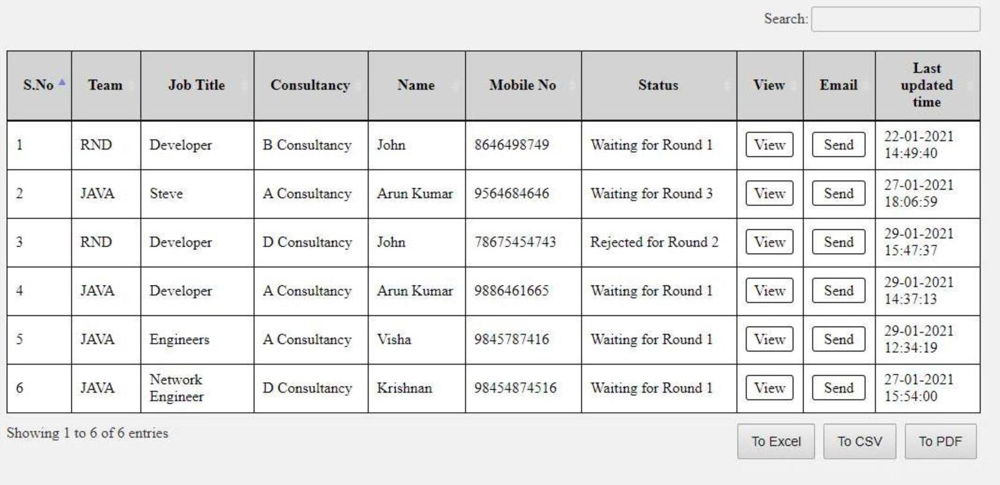

While using DataTables for my project, When i align the Export buttons to the right side of the table using float:right. It is not properly aligned with the right edge of the table. Whereas it is properly aligned when i set float:left.
Please suggest a solution for this. 
$(" #adminMainTable,#managerMainTable").DataTable( {
scrollY: '50vh',
scrollCollapse: true,
paging: false,
dom: 'frtpB', //This changes the position to Bottom
buttons: [
{ extend: 'excelHtml5', text: 'To Excel' },
{ extend: 'csvHtml5', text: 'To CSV' },
{ extend: 'pdfHtml5', text: 'To PDF' }
]
});
//The below code is for changing the position of buttons to right side of the table
$("div#adminMainTable_wrapper,div#managerMainTable_wrapper").find($(".dt-buttons")).css("float","right");
| Can you provide the code needed to reproduce this (a minimal reproducible example)? - andrewJames 29 Jan 2021 at 15:31 | |
| If you have not already done so, you can take the tour and read How to Ask. - andrewJames 29 Jan 2021 at 15:31 | |
| @andrewjames Sorry, I've added the code of what i've changed - Arun 29 Jan 2021 at 15:48 |
Using a similar approach to your code for floating right, you can do this:
$(your selector in here).find($(".dt-buttons button.dt-button:nth-child(3)")).css("margin-right","0");
In other words, remove the right-padding from the final button.
Instead of :nth-child(3), you can use :last-child. That may be safer if the number of buttons ever changes.
| This solved my issue. Thank you so much AndrewJames : ) - Arun 29 Jan 2021 at 16:56 |
{kind=link}